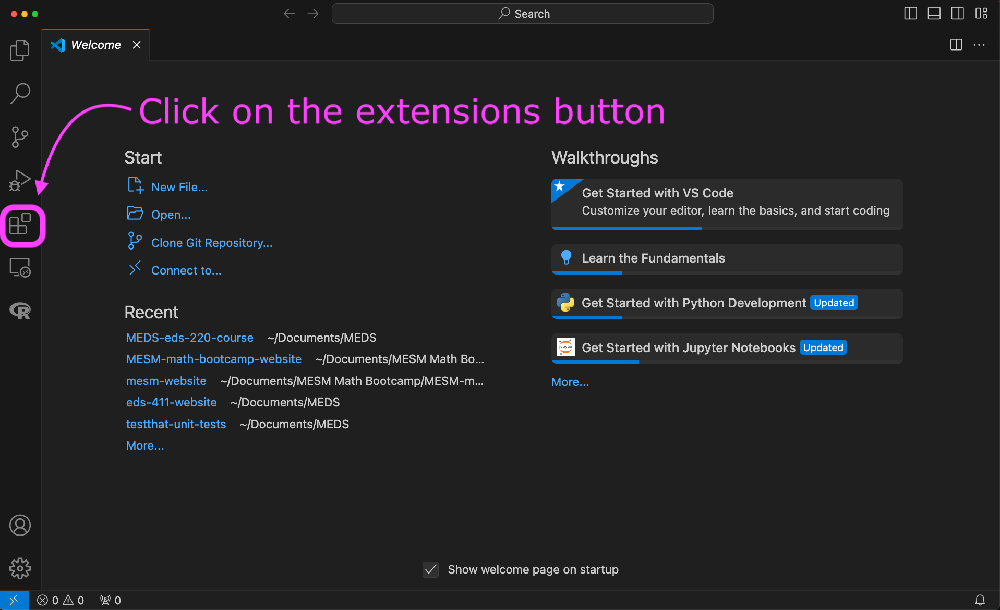
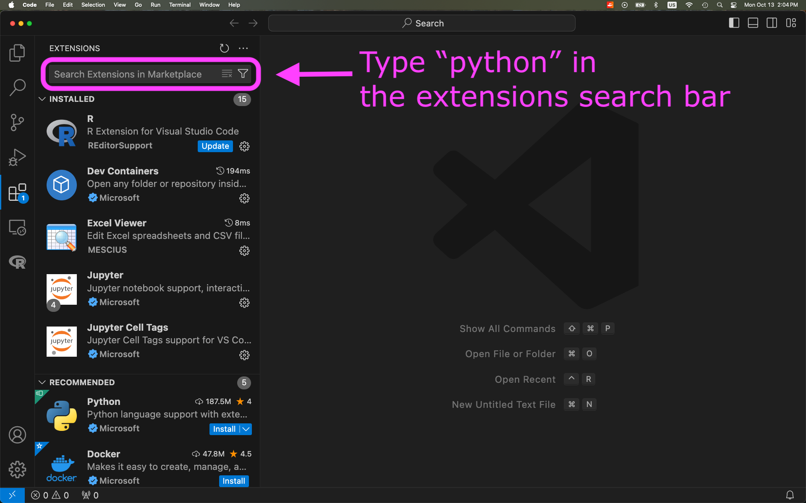
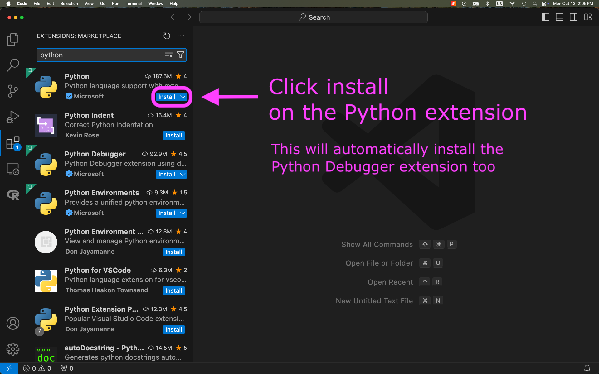
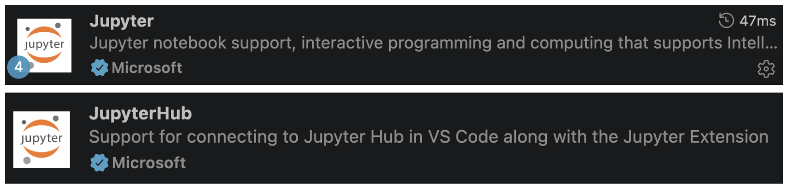
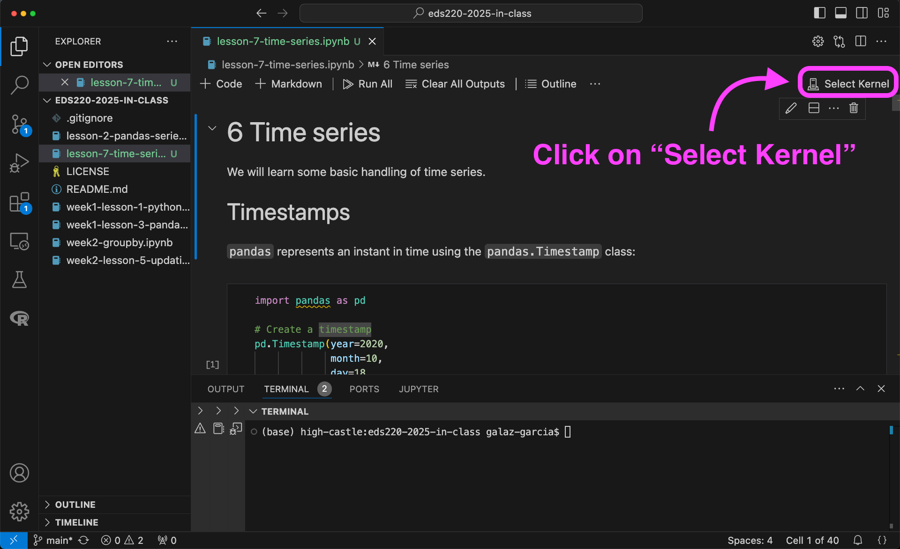
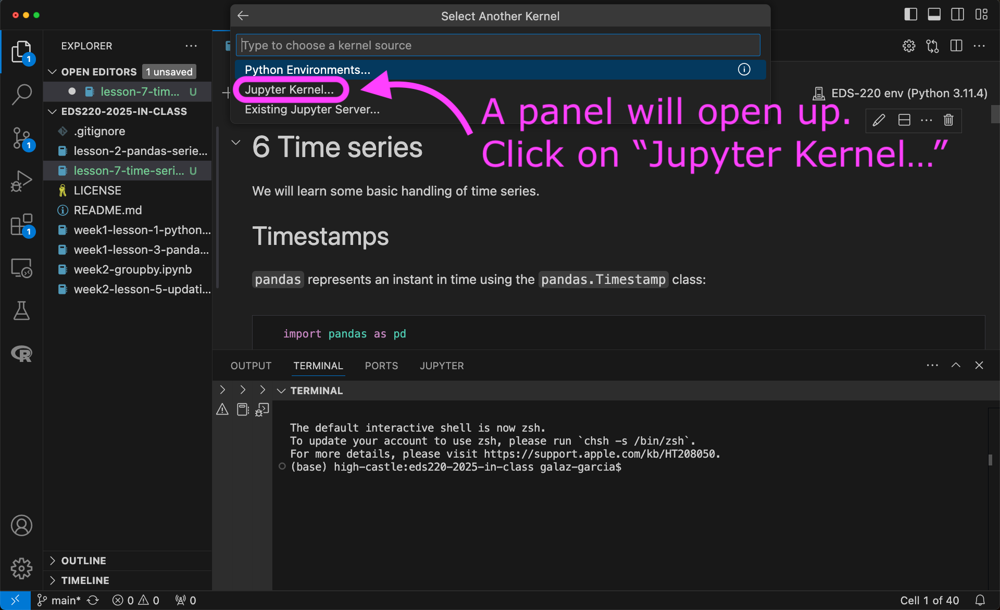
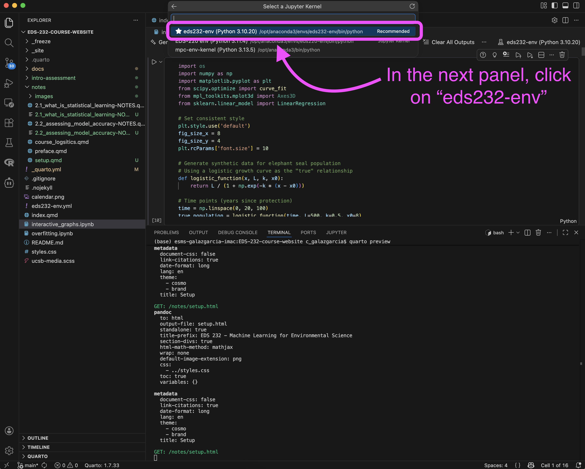

Setup
Step 1: Create and clone course repositories
Create a
MEDS/EDS-232directory in your personal computer.Create two GitHub repositores named
eds232-in-classandeds232-labs.Open a terminal in your personal computer.
Confirm git is installed by running
git versionin the terminal. If git is installed you will get something similar to
git version 2.33.1If you don’t get a similar output, install git by following the MEDS installation guide.
Clone your
eds232-in-classandeds232-labsrepositories inside theMEDS/EDS-232directory. Make sure you don’t end up cloning one inside the other!
Step 2: Conda setup
Open Visual Studio Code (VSCode). If you don’t have this IDE in your computer, now is the moment to install it: https://code.visualstudio.com/download.
Open a new bash terminal in VSCode.
Confirm your conda installation by running
conda --versionin the terminal. If conda is active you will get something similar to
conda 25.5.1If you do not have conda or if conda needs to be added to the shell profile, follow the installation and troubleshooting steps in the MEDS installation guide within a bash terminal (not Powershell if you are on Windows).
If your conda version is lower than 25.5.1, update it to the latest by running this command in the terminal:
conda update --name base conda- Restart your terminal and run
conda --versionagain to verify it has been updated.
If updating conda through the terminal does not work, just reinstall it from the link in the MEDS installation guide. An old conda version can keep your environment solving forever when you try to create it.
Step 3: VSCode setup
Open Visual Studio Code (VSCode). If you don’t have this IDE in your computer, now is the moment to install it: https://code.visualstudio.com/download.
Install the VSCode Python extension:



- Search for and install the Jupyter and JupyterHub VSCode extensions too. Their logos look like this:

- Restart VSCode.
Step 4: Build conda environment for the course
Make sure you have completed the conda setup before creating the environment.
Open VSCode on your computer.
Download the following YAML file and move it into your
eds232-in-classdirectory: https://github.com/MEDS-eds-232/EDS-232-course-website/blob/main/eds232-env.ymlOpen a bash terminal inside VSCode and in it:
- Verify you are in the
eds232-in-classdirectory. - Verify that the
eds232-env.ymlfile is in the directory. - Run the following conda command to build the environment we will use for the course:
conda env create --name eds232-env --file eds232-env.ymlIt may take a moment to build the environment. Once conda has finished, verify that the environment was created by running conda env list.
If you need a refresher on basic conda commands, check out the table on the EDS 220 website.
You will need to install manually a jupyter kernel associated to your environment so you can use the environment on VSCode!
Step 5: Add Jupyter kernel for the course environment
Make sure you have built the eds232-env and completed the VSCode setup before creating the kernel.
Open VSCode on your computer.
Add a new bash terminal in it.
Verify you have the
eds232-envconda environment available by running
conda env list- Activate the
eds232-envby running
conda activate eds232-envVerify the environment has been activated.
Run
python -m ipykernel install --user --name eds232-env --display-name "eds232-env"- Verify that the kernel has been created by running
jupyter kernelspec listThe output should look similar to this:
Available kernels:
eds232-env /Users/galaz-garcia/Library/Jupyter/kernels/eds220-env
python3 /Users/galaz-garcia/opt/anaconda3/share/jupyter/kernels/python3Close and reopen VSCode.
To use the new kernel, open a Jupyter notebook on VSCode and…



That’s the end of the setup!